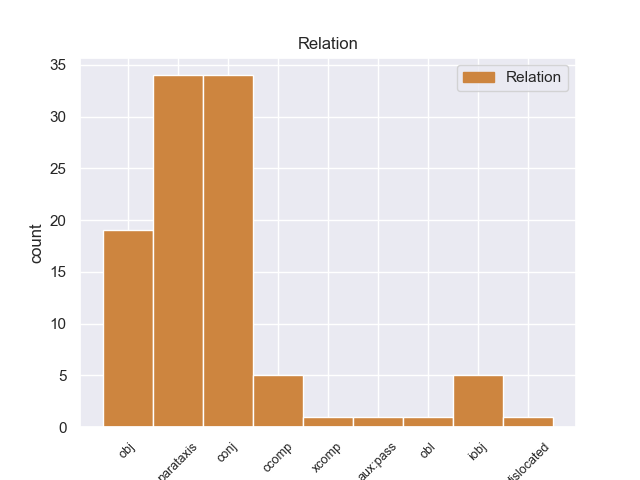
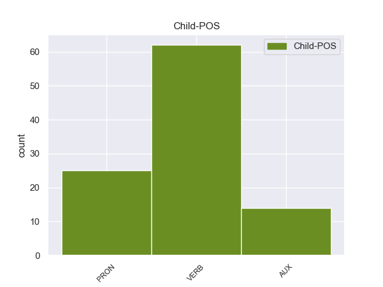

Distribution of features within this leaf



Agreement Rules sorted by frequency.
- When the dependent token is the object(obj) of the head token, and the head token is VERB and the dependent token is PRON.
1 राग _ _ _ _ 0 _ _ _
2 नका _ _ _ _ 0 _ _ _
3 मानू _ _ _ _ 0 _ _ _
4 दादा _ _ _ _ 0 _ _ _
5 ; _ _ _ _ 0 _ _ _
6 परंतु _ _ _ _ 0 _ _ _
7 खरे _ _ _ _ 0 _ _ _
8 ते तो PRON -- Distance=Dist|Gender=Neut|Number=Sing|Person=3 10 obj _ _
9 मी _ _ _ _ 0 _ _ _
10 सांगतो सांगणे VERB -- Aspect=Imp|Gender=Masc|Number=Sing|Person=3|Tense=Pres|VerbForm=Fin 0 _ _ _
11 . _ _ _ _ 0 _ _ _
1 ती _ _ _ _ 0 _ _ _
2 कुत्र्याला _ _ _ _ 0 _ _ _
3 विचारते विचारणे VERB -- Aspect=Imp|Gender=Fem|Number=Sing|Person=3|Tense=Pres|VerbForm=Fin 0 _ _ _
4 , _ _ _ _ 0 _ _ _
5 तुला _ _ _ _ 0 _ _ _
6 जेम्स _ _ _ _ 0 _ _ _
7 दिसला दिसणे VERB -- Aspect=Perf|Gender=Masc|Number=Sing|Person=3|VerbForm=Fin 3 parataxis _ _
8 का _ _ _ _ 0 _ _ _
9 ? _ _ _ _ 0 _ _ _
1 राजाने _ _ _ _ 0 _ _ _
2 खुशमस्कऱ्यास _ _ _ _ 0 _ _ _
3 बोलावले बोलावणे VERB -- Aspect=Perf|Gender=Neut|Number=Sing|Person=3|VerbForm=Fin 0 _ _ _
4 व _ _ _ _ 0 _ _ _
5 सांगितले _ _ _ _ 0 _ _ _
6 , _ _ _ _ 0 _ _ _
7 अरे _ _ _ _ 0 _ _ _
8 , _ _ _ _ 0 _ _ _
9 None _ _ _ _ 0 _ _ _
10 None _ _ _ _ 0 _ _ _
11 बाबा _ _ _ _ 0 _ _ _
12 None _ _ _ _ 0 _ _ _
13 None _ _ _ _ 0 _ _ _
14 आठवण _ _ _ _ 0 _ _ _
15 काढीत _ _ _ _ 0 _ _ _
16 आहेत असणे AUX -- Number=Plur|Person=3|Tense=Pres|VerbForm=Fin 3 parataxis _ _
17 . _ _ _ _ 0 _ _ _
1 तो _ _ _ _ 0 _ _ _
2 पाठीमागून _ _ _ _ 0 _ _ _
3 कोणी _ _ _ _ 0 _ _ _
4 येत _ _ _ _ 0 _ _ _
5 आहे असणे AUX -- Number=Sing|Person=3|Tense=Pres|VerbForm=Fin 8 ccomp _ _
6 असे _ _ _ _ 0 _ _ _
7 त्यांना _ _ _ _ 0 _ _ _
8 वाटले वाटणे VERB -- Aspect=Perf|Gender=Neut|Number=Sing|Person=3|VerbForm=Fin 0 _ _ _
9 . _ _ _ _ 0 _ _ _
1 बेडूक _ _ _ _ 0 _ _ _
2 वाचवावा वाचवणे VERB -- Gender=Masc|Mood=Sub|Number=Sing|Person=3|VerbForm=Fin 0 _ _ _
3 तर _ _ _ _ 0 _ _ _
4 None _ _ _ _ 0 _ _ _
5 None _ _ _ _ 0 _ _ _
6 भूक _ _ _ _ 0 _ _ _
7 कशी _ _ _ _ 0 _ _ _
8 शमवायची शमवणे VERB -- Gender=Fem|Mood=Des|Number=Sing|Person=3|VerbForm=Part 2 ccomp _ _
9 ? _ _ _ _ 0 _ _ _
1 राजवाडा _ _ _ _ 0 _ _ _
2 शृंगारला शृंगारणे VERB -- Aspect=Perf|Gender=Masc|Number=Sing|Person=3|VerbForm=Fin 3 AUX:PASS _ _
3 गेला जाणे VERB -- Aspect=Perf|Gender=Masc|Number=Sing|Person=3|VerbForm=Fin 0 _ _ _
4 . _ _ _ _ 0 _ _ _
1 राजाने _ _ _ _ 0 _ _ _
2 त्याला तो PRON -- Case=Dat|Distance=Dist|Gender=Masc|Number=Sing|Person=3 3 obl _ _
3 विचारले विचारणे VERB -- Aspect=Perf|Gender=Neut|Number=Sing|Person=3|VerbForm=Fin 0 _ _ _
4 , _ _ _ _ 0 _ _ _
5 कोण _ _ _ _ 0 _ _ _
6 आला _ _ _ _ 0 _ _ _
7 आहे _ _ _ _ 0 _ _ _
8 राजपुत्र _ _ _ _ 0 _ _ _
9 ? _ _ _ _ 0 _ _ _
1 जेम्स _ _ _ _ 0 _ _ _
2 कुठे _ _ _ _ 0 _ _ _
3 आहे असणे AUX -- Number=Sing|Person=3|Tense=Pres|VerbForm=Fin 5 dislocated _ _
4 , _ _ _ _ 0 _ _ _
5 हे हा PRON -- Case=Acc|Distance=Prox|Gender=Neut|Number=Sing|Person=3 0 _ _ _
6 मेरीला _ _ _ _ 0 _ _ _
7 माहित _ _ _ _ 0 _ _ _
8 नाही _ _ _ _ 0 _ _ _
9 . _ _ _ _ 0 _ _ _
Disagree Examples:
1 " _ _ _ _ 0 _ _ _
2 नका _ _ _ _ 0 _ _ _
3 घालवू घालवणे VERB -- Mood=Imp|Number=Plur|Person=2|Polarity=Neg|VerbForm=Fin 0 _ _ _
4 त्याला तो PRON -- Case=Acc|Distance=Dist|Gender=Masc|Number=Sing|Person=3 3 obj _ _
5 दूर _ _ _ _ 0 _ _ _
6 ! _ _ _ _ 0 _ _ _
7 " _ _ _ _ 0 _ _ _
8 ती _ _ _ _ 0 _ _ _
9 रडत _ _ _ _ 0 _ _ _
10 म्हणाली _ _ _ _ 0 _ _ _
11 . _ _ _ _ 0 _ _ _
1 " _ _ _ _ 0 _ _ _
2 नका _ _ _ _ 0 _ _ _
3 घालवू घालवणे VERB -- Mood=Imp|Number=Plur|Person=2|Polarity=Neg|VerbForm=Fin 0 _ _ _
4 त्याला _ _ _ _ 0 _ _ _
5 दूर _ _ _ _ 0 _ _ _
6 ! _ _ _ _ 0 _ _ _
7 " _ _ _ _ 0 _ _ _
8 ती _ _ _ _ 0 _ _ _
9 रडत _ _ _ _ 0 _ _ _
10 म्हणाली म्हणणे VERB -- Aspect=Perf|Gender=Fem|Number=Sing|Person=3|VerbForm=Fin 3 parataxis _ _
11 . _ _ _ _ 0 _ _ _
1 " _ _ _ _ 0 _ _ _
2 आज _ _ _ _ 0 _ _ _
3 त्याला _ _ _ _ 0 _ _ _
4 हाकलून _ _ _ _ 0 _ _ _
5 देणे _ _ _ _ 0 _ _ _
6 तुला तू PRON -- Case=Dat|Number=Sing|Person=2 9 obj _ _
7 None _ _ _ _ 0 _ _ _
8 None _ _ _ _ 0 _ _ _
9 वाटले वाटणे VERB -- Aspect=Perf|Gender=Neut|Number=Sing|Person=3|VerbForm=Fin 0 _ _ _
10 तरी _ _ _ _ 0 _ _ _
11 None _ _ _ _ 0 _ _ _
12 None _ _ _ _ 0 _ _ _
13 None _ _ _ _ 0 _ _ _
14 None _ _ _ _ 0 _ _ _
15 आहे _ _ _ _ 0 _ _ _
16 , _ _ _ _ 0 _ _ _
17 " _ _ _ _ 0 _ _ _
18 तो _ _ _ _ 0 _ _ _
19 म्हणाला _ _ _ _ 0 _ _ _
20 . _ _ _ _ 0 _ _ _
1 हे हा PRON -- Distance=Prox|Gender=Neut|Number=Sing|Person=3 2 obj _ _
2 घे घेणे VERB -- Mood=Imp|Number=Sing|Person=2|VerbForm=Fin 0 _ _ _
3 चार _ _ _ _ 0 _ _ _
4 लाडू _ _ _ _ 0 _ _ _
5 . _ _ _ _ 0 _ _ _
1 मी _ _ _ _ 0 _ _ _
2 None _ _ _ _ 0 _ _ _
3 None _ _ _ _ 0 _ _ _
4 बहीण _ _ _ _ 0 _ _ _
5 होऊ होणे VERB -- Person=1|Tense=Fut|VerbForm=Fin 6 xcomp _ _
6 इच्छिते इच्छणे VERB -- Aspect=Imp|Gender=Fem|Number=Sing|Person=3|Tense=Pres|VerbForm=Fin 0 _ _ _
7 . _ _ _ _ 0 _ _ _